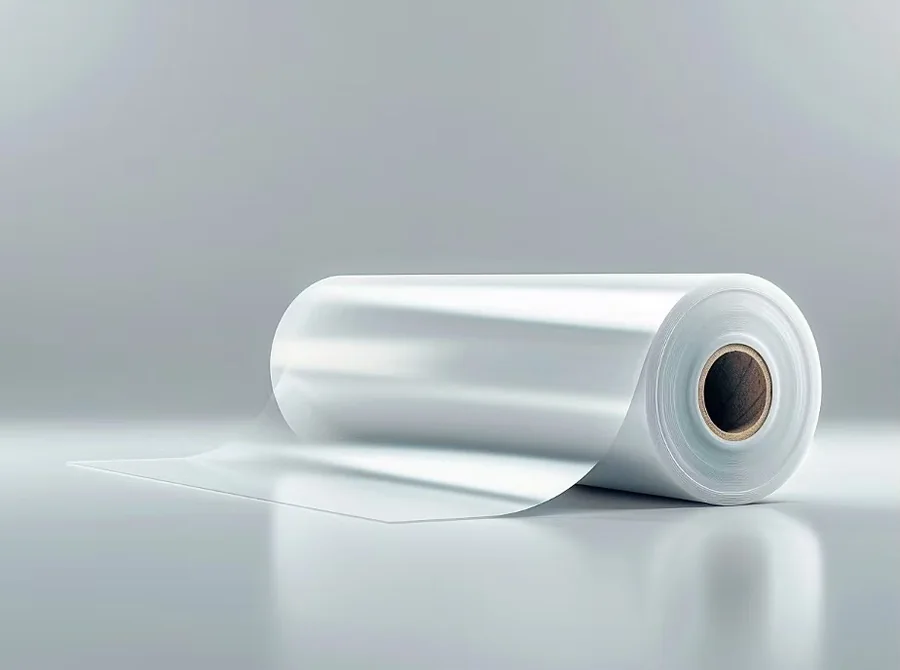

电池制造的的运用
电池的安全性与循环寿命是能源存储和电动汽车发展的核心挑战。VitaFlon®系列特种高分子材料，凭借其卓越的耐电解液腐蚀性、出色的高温尺寸稳定性、高绝缘强度及低离子迁移率，专为电池关键组件提供全方位保护。它能有效应用于电芯内部绝缘、极耳封装、电池模块绝缘隔离等环节，显著提升电池包的热稳定性、安全性及长期循环性能，是下一代高能量密度电池设计中不可或缺的可靠材料。
电池的安全性与循环寿命是能源存储和电动汽车发展的核心挑战。VitaFlon®系列特种高分子材料，凭借其卓越的耐电解液腐蚀性、出色的高温尺寸稳定性、高绝缘强度及低离子迁移率，专为电池关键组件提供全方位保护。它能有效应用于电芯内部绝缘、极耳封装、电池模块绝缘隔离等环节，显著提升电池包的热稳定性、安全性及长期循环性能，是下一代高能量密度电池设计中不可或缺的可靠材料。
随着数据传输速率向GHz迈进，以及电子系统对高可靠性、轻量化的极致追求，PCB基材与涂覆材料的性能已成为瓶颈。VitaFlon®系列特种高分子材料，以其极低且稳定的介电常数（Dk）与损耗因子（Df）、卓越的耐高温性、出色的绝缘强度及环保特性，为高速数字电路、高频射频电路、高密度互连（HDI）板及芯片载板提供核心材料支持。它不仅能够保障信号完整性、降低传输损耗，更能满足无铅焊接等高热负荷工艺要求，是提升PCB电气性能、长期可靠性及环保合规性的理想选择。
5G网络的高速率、低延迟与海量连接，依赖于毫米波高频信号与大规模天线阵列（Massive MIMO）。这要求设备材料必须在极高频段保持极低的介电损耗（Df）、卓越的信号完整性、出色的耐候性及长期可靠性。VitaFlon®系列特种高分子材料，专为应对这一挑战而生。其稳定的低介电常数（Dk）与损耗、优异的耐高温高湿及抗腐蚀性能，使其成为5G基站AAU天线罩、射频前端模块、高速背板连接器及设备内部电路的理想选择，是保障5G网络性能与部署经济性的关键材料基石。
在追求极致音质与设备微型化的时代，扬声器振膜材料的性能直接决定了声音的还原度、灵敏度与可靠性。VitaFlon®系列特种高分子材料，集卓越的柔韧性、极低的密度、出色的热稳定性以及关键的低特性声阻抗于一体，专为满足微型扬声器、高音单元、汽车音响及专业音频设备的苛刻要求而设计。它不仅能实现高灵敏度与宽广的频率响应，更能确保在车载高温腔体等恶劣环境下的长期稳定工作，是提升终端产品听觉体验与耐用性的核心材料。
在新能源汽车、高速轨道交通、航空航天及工业自动化等领域，电线电缆不仅是能量与信号的载体，更是系统安全与可靠性的生命线。VitaFlon®系列特种高分子材料，以其卓越的介电强度、极低的介电损耗、出色的耐高温（高至C级及以上）、耐化学腐蚀及阻燃特性，为耐高温线缆、高频传输线缆、轻量化航空导线及耐油污汽车线束提供顶级绝缘与护层解决方案。它能有效保障在复杂电磁环境、极端温度及化学暴露下的长期稳定运行，是高端装备与关键基础设施的可靠选择。
在数据爆炸式增长的时代，企业级硬盘和近线存储系统的长期可靠运行与数据完整性至关重要。VitaFlon®系列特种高分子材料，以其卓越的耐磨性、极低的摩擦系数、优异的尺寸稳定性及出色的防静电性能，专为硬盘驱动器的磁头悬臂（Suspension）组件、精密轴承衬套及内部绝缘部件而优化。它能有效解决磁头与盘片在7x24小时不间断运行中产生的微观磨损、颗粒释放及静电积聚问题，从而保障硬盘在全生命周期内的高可靠性与超大容量下的性能稳定，是构建企业级存储系统的信赖之选。
雷达天线罩（Radome）是保护精密雷达系统免受恶劣环境影响的关键屏障，其性能直接决定雷达的探测精度与可靠性。VitaFlon®系列特种高分子材料，集卓越的机械韧性、高延展性、优异的抗疲劳特性与稳定的低介电常数（Dk）于一体，是制造充气式（气囊型）雷达罩、刚性夹层结构雷达罩以及高性能舰载、机载雷达罩的理想材料。它不仅能为复杂曲面或大型结构提供可靠的轻量化支撑，更能确保雷达波的高透波率与低信号失真，保障雷达在风雨、盐雾、极端温差等严苛环境下全天候稳定工作。
在显示技术向更高分辨率、更轻薄形态、更柔性设计演进的浪潮中，功能性薄膜的性能直接决定了最终产品的视觉体验与耐用性。VitaFlon®系列特种高分子材料，凭借其行业领先的光学均一性、极致洁净度、超精密加工适应性以及优异的尺寸稳定性，在显示面板制造中扮演着双重关键角色：既是保障良率的核心制程辅材，也是提升性能的关键功能部件。我们在光学清晰度、杂质控制和工艺精度方面的领导地位，为显示产业的创新与升级提供了坚实基础。
随着5G、AI及物联网设备向更轻薄、更高频、更高功率演进，组件间日益微小的间隙对介电材料的绝缘可靠性、信号完整性及热管理能力提出了极限挑战。VitaFlon®系列特种高分子材料，凭借其极低的介电常数（Dk）与损耗因子（Df）、卓越的介电强度、优异的热稳定性及高导热潜力，成为管理智能手机、可穿戴设备及高性能计算模块内部电磁干扰与热积聚的关键。它赋予工程师在微型化设计中平衡电气安全、信号纯净与散热效率的“极大自由”，是突破下一代电子产品性能边界的基础材料。


